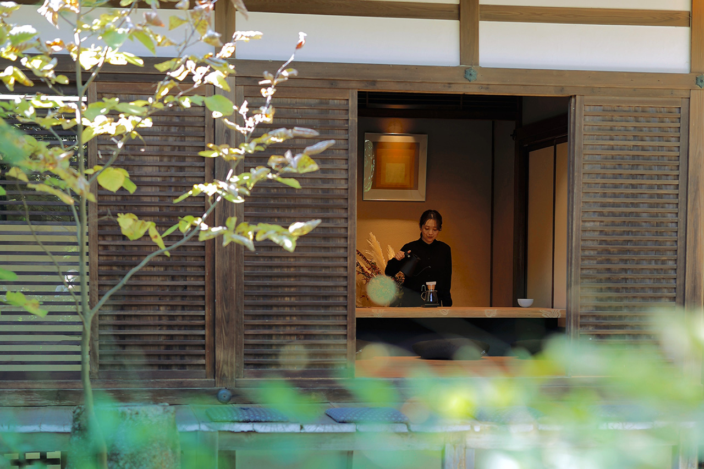
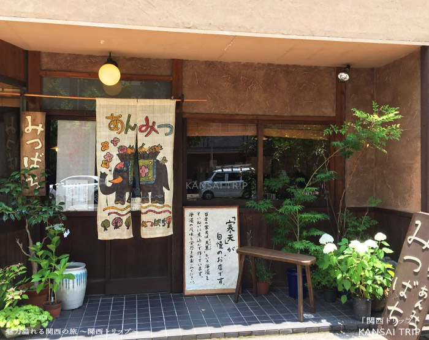
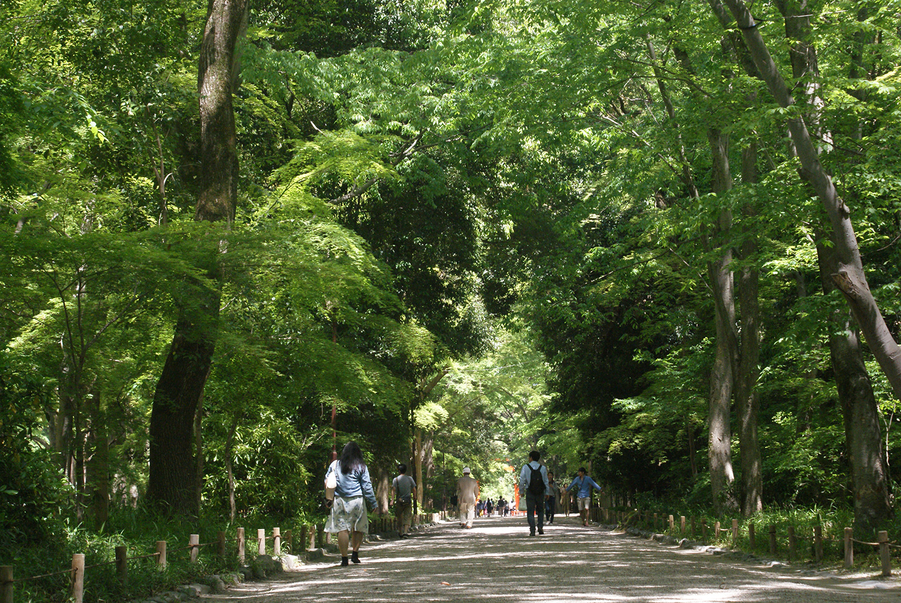

Coffee Base NASHINOKI

神社の境内にある人気カフェ。
自然に囲まれた静かな空間でゆったり過ごせそう。
ひとこと
神社の中にあるカフェ、雰囲気がとてもよさそうで気になる！！
Demachiyanagiⅼⅼ Stroll
一旦出町柳周辺で気になってる場所を集めてみた！
ゆるっとお出かけ楽しみ〜！
— 次のお出かけのしおり —

神社の境内にある人気カフェ。
自然に囲まれた静かな空間でゆったり過ごせそう。
神社の中にあるカフェ、雰囲気がとてもよさそうで気になる！！

京都で人気の甘味処。
手作りあんみつが楽しめるお店。
なんか京都であんみつってよくない？笑
京都の老舗和菓子店。
豆大福が有名なお店。
めっちゃ人気の和菓子屋さん。豆大福が有名なのかな？めっちゃ並ぶけど1回行ってみたいんだよね〜
広々とした庭園と歴史ある景観が楽しめるスポット。散歩にぴったり。
近いし散歩によさそう、一回行ってみたかった！

自然豊かな参道と歴史ある神社が楽しめるスポット。
鴨川から上に上がるのもありだね！
京都らしい雰囲気の中で楽しめる中華料理店。
餃子が人気のお店で、夜ごはん候補として気になるスポット。
出町柳からは離れるけど、餃子のおいしそうなお店発見しました…🫣